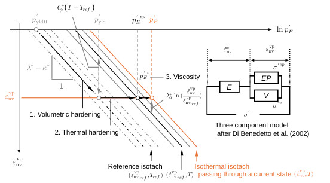

Ch3.4.2
Formulation 
Fig. 3.4.11 Geometrical framework for the formulation of isothermal isotaches The elasto-viscoplastic framework is developed in analogy with the conventional elasto-plastic formulation (Chapter 3.2.4). The essential distinction is that volumetric response is described by the isotach concept; therefore, the consistency law and yielding criterion are no longer required. The formulation is constructed from an equivalent isotropic compression plane and a viscoplastic potential.
Isothermal isotach on equivalent isotropic compression plane The three-component model (Di Benedetto et al., 2002) is incorporated to clarify the structure. The equivalent isotropic stress is decomposed into elasto-plastic and viscous components:
$$p'_E=(p'_E)^{ep}+(p'_E)^v=(p'_E)^{ep}\left(1+\frac{(p'_E)^v}{(p'_E)^{ep}}\right) \tag{3.4.9}$$ $$p'_{ref}=p'_{ref0}\exp\left(\frac{\varepsilon^{vp}_{nv}}{\lambda^*-\kappa^*}\right) \tag{3.4.10}$$ $$ (p'_E)^{ep}=p'_{ref}\exp\left(-\frac{C^*_\beta}{\lambda^*-\kappa^*}(T-T_{ref})\right) \tag{3.4.11}$$ $$\frac{(p'_E)^v}{(p'_E)^{ep}}=\left(\frac{\dot\varepsilon^{vp}_{nv}}{\dot\varepsilon^{vp}_{ref}}\right)^{\lambda^*_\alpha/(\lambda^*-\kappa^*)}-1 \tag{3.4.12}$$ $$\dot\varepsilon^{vp}_{nv}=\dot\varepsilon^{vp}_{ref}\left(\frac{p'_E}{(p'_E)^{ep}}\right)^{(\lambda^*-\kappa^*)/\lambda^*_\alpha} \tag{3.4.13}$$ $$\dot\varepsilon^{vp}_{nv}=\dot\varepsilon^{vp}_{ref}\left\{\frac{p'_E}{p'_{ref0}\exp[-(\varepsilon^{vp}_{nv}-C^*_\beta(T-T_{ref}))/(\lambda^*-\kappa^*)]}\right\}^{(\lambda^*-\kappa^*)/\lambda^*_\alpha} \tag{3.4.14}$$
Viscoplastic potential Strain-rate directions are determined by the normality rule:
$$\{\dot{\boldsymbol\varepsilon}^{vp}\}=\dot S\frac{\partial g}{\partial\{\boldsymbol\sigma'\}} \tag{3.4.15}$$ $$\dot S=\frac{\dot\varepsilon^{vp}_{nv}}{\partial g/\partial p'} \tag{3.4.16}$$ $$\{\dot{\boldsymbol\varepsilon}^{vp}\}=\dot\varepsilon^{vp}_{nv}\frac{\partial p'}{\partial\{\boldsymbol\sigma'\}}+\dot\varepsilon^{vp}_{nd}\frac{\partial q}{\partial\{\boldsymbol\sigma'\}} \tag{3.4.17}$$
Here, $\dot\varepsilon^{vp}_{nd}=(\partial g/\partial q)/(\partial g/\partial p')\dot\varepsilon^{vp}_{nv}$. The scheme follows a conventional framework, while acknowledging that it conflicts with a strict critical-state condition.
Using Euler’s explicit scheme, the Jaumann rate of effective stress is:
$$\{\widehat{\boldsymbol\sigma'}\}=[\mathbf D^e]\{\dot{\boldsymbol\varepsilon}\}-\{\widehat{\boldsymbol\sigma'}^{vp}\} \tag{3.4.18}$$ $$\{\widehat{\boldsymbol\sigma'}^{vp}\}=[\mathbf D^e]\{\dot{\boldsymbol\varepsilon}^{vp}\} \tag{3.4.19}$$
To improve numerical stability, the constitutive relationship is reformulated in an implicit scheme following Oka (2000):
$$\{\Delta\boldsymbol\varepsilon^{vp}\}=(1-\theta)\{\dot{\boldsymbol\varepsilon}^{vp}\}^t\Delta t+\theta\{\dot{\boldsymbol\varepsilon}^{vp}\}^{t+\Delta t}\Delta t \tag{3.4.20}$$ $$\{\dot{\boldsymbol\varepsilon}^{vp}\}^{t+\Delta t}=\{\dot{\boldsymbol\varepsilon}^{vp}\}^t+\frac{\partial\{\dot{\boldsymbol\varepsilon}^{vp}\}}{\partial\dot\varepsilon^{vp}_{nv}}\left[\frac{\partial\dot\varepsilon^{vp}_{nv}}{\partial p'_E}\left(\frac{\partial p'_E}{\partial\{\boldsymbol\sigma'\}}\right)^{\mathsf T}\{\Delta\boldsymbol\sigma'\}+\frac{\partial\dot\varepsilon^{vp}_{nv}}{\partial\varepsilon^{vp}_{nv}\!}\left(\frac{\partial\varepsilon^{vp}_{nv}}{\partial\{\boldsymbol\varepsilon^{vp}\}}\right)^{\mathsf T}\{\Delta\boldsymbol\varepsilon^{vp}\}+\frac{\partial\dot\varepsilon^{vp}_{nv}}{\partial\varepsilon^{vp}_{nv}}\frac{\partial\varepsilon^{vp}_{nv}}{\partial T}\Delta T\right] \tag{3.4.21}$$ $$\{\Delta\boldsymbol\sigma'\}=[\mathbf D^e](\{\Delta\boldsymbol\varepsilon\}-\{\Delta\boldsymbol\varepsilon^{vp}\}) \tag{3.4.22}$$ $$\frac{\partial\{\dot{\boldsymbol\varepsilon}^{vp}\}}{\partial\dot\varepsilon^{vp}_{nv}}=\frac{\partial g/\partial\{\boldsymbol\sigma'\}}{\partial g/\partial p'} \tag{3.4.23}$$
Substitution and rearrangement give the viscoplastic resistance form:
$$[\mathbf r^{vp}]\{\Delta\boldsymbol\varepsilon^{vp}\}=\{\dot{\boldsymbol\varepsilon}^{vp}\}^t\Delta t+\theta\Delta t\frac{\partial\dot\varepsilon^{vp}_{nv}/\partial p'_E}{\partial g/\partial p'}\frac{\partial g}{\partial\{\boldsymbol\sigma'\}}\left(\frac{\partial p'_E}{\partial\{\boldsymbol\sigma'\}}\right)^{\mathsf T}[\mathbf D^e]\{\Delta\boldsymbol\varepsilon\}+\theta\Delta t\frac{\partial\dot\varepsilon^{vp}_{nv}/\partial\varepsilon^{vp}_{nv}}{\partial g/\partial p'}\frac{\partial\varepsilon^{vp}_{nv}}{\partial T}\frac{\partial g}{\partial\{\boldsymbol\sigma'\}}\Delta T \tag{3.4.25}$$ $$[\mathbf r^{vp}]=[\mathbf I]+\theta\Delta t\left[\frac{\partial\dot\varepsilon^{vp}_{nv}/\partial p'_E}{\partial g/\partial p'}\frac{\partial g}{\partial\{\boldsymbol\sigma'\}}\left(\frac{\partial p'_E}{\partial\{\boldsymbol\sigma'\}}\right)^{\mathsf T}[\mathbf D^e]-\frac{\partial\dot\varepsilon^{vp}_{nv}/\partial\varepsilon^{vp}_{nv}}{\partial g/\partial p'}\frac{\partial g}{\partial\{\boldsymbol\sigma'\}}\left(\frac{\partial\varepsilon^{vp}_{nv}}{\partial\{\boldsymbol\varepsilon^{vp}\}}\right)^{\mathsf T}\right] \tag{3.4.26}$$ $$\{\Delta\boldsymbol\varepsilon^{vp}\}=\Delta t[\mathbf r^{vp}]^{-1}\{\dot{\boldsymbol\varepsilon}^{vp}\}^t+\theta\Delta t\frac{\partial\dot\varepsilon^{vp}_{nv}/\partial p'_E}{\partial g/\partial p'}[\mathbf r^{vp}]^{-1}\frac{\partial g}{\partial\{\boldsymbol\sigma'\}}\left(\frac{\partial p'_E}{\partial\{\boldsymbol\sigma'\}}\right)^{\mathsf T}[\mathbf D^e]\{\Delta\boldsymbol\varepsilon\}+\theta\Delta t\frac{\partial\dot\varepsilon^{vp}_{nv}/\partial\varepsilon^{vp}_{nv}}{\partial g/\partial p'}\frac{\partial\varepsilon^{vp}_{nv}}{\partial T}[\mathbf r^{vp}]^{-1}\frac{\partial g}{\partial\{\boldsymbol\sigma'\}}\Delta T \tag{3.4.27}$$
The incremental constitutive relationship based on the isothermal isotach concept becomes:
$$\therefore\{\Delta\boldsymbol\sigma'\}=[\mathbf D^{evp}]\{\Delta\boldsymbol\varepsilon\}-\{\Delta\boldsymbol\sigma'^{vp}\}-\{\mathbf c^{tvp}\}\Delta T \tag{3.4.28}$$ $$[\mathbf D^{evp}]=[\mathbf D^e]-\theta\Delta t\frac{\partial\dot\varepsilon^{vp}_{nv}/\partial p'_E}{\partial g/\partial p'}[\mathbf D^e][\mathbf r^{vp}]^{-1}\frac{\partial g}{\partial\{\boldsymbol\sigma'\}}\left(\frac{\partial p'_E}{\partial\{\boldsymbol\sigma'\}}\right)^{\mathsf T}[\mathbf D^e] \tag{3.4.29}$$ $$\{\widehat{\boldsymbol\sigma'}^{vp}\}=\Delta t[\mathbf D^e][\mathbf r^{vp}]^{-1}\{\dot{\boldsymbol\varepsilon}^{vp}\}^t \tag{3.4.30}$$ $$\{\mathbf c^{tvp}\}=\theta\Delta t\frac{\partial\dot\varepsilon^{vp}_{nv}/∂\varepsilon^{vp}_{nv}}{\partial g/\partial p'}\frac{\partial\varepsilon^{vp}_{nv}}{\partial T}[\mathbf D^e][\mathbf r^{vp}]^{-1}\frac{\partial g}{\partial\{\boldsymbol\sigma'\}} \tag{3.4.31}$$
The required derivatives are:
$$\frac{\partial\dot\varepsilon^{vp}_{nv}}{\partial p'_E}=\frac{\lambda^*-\kappa^*}{\lambda^*_\alpha}\frac{\dot\varepsilon^{vp}_{nv}}{p'_E} \tag{3.4.32}$$ $$\frac{\partial\dot\varepsilon^{vp}_{nv}}{\partial\varepsilon^{vp}_{nv}}=-\frac{\dot\varepsilon^{vp}_{nv}}{\lambda^*_\alpha} \tag{3.4.33}$$ $$\frac{\partial\varepsilon^{vp}_{nv}}{\partial T}=C^*_\beta \tag{3.4.34}$$ $$\frac{\partial p'_E}{\partial\{\boldsymbol\sigma'\}}=\frac{\partial p'_E}{\partial p'}\frac{\partial p'}{\partial\{\boldsymbol\sigma'\}}+\frac{\partial p'_E}{\partial q}\frac{\partial q}{\partial\{\boldsymbol\sigma'\}} \tag{3.4.35}$$ $$\frac{\partial p'_E}{\partial p'}=\left(1+\frac{|\eta-\beta|^{n_L}}{M^{n_L}-\beta^{n_L}}\right)^{2/n_L}-2\eta\left(1+\frac{|\eta-\beta|^{n_L}}{M^{n_L}-\beta^{n_L}}\right)^{2/n_L-1}\frac{(\eta-\beta)|\eta-\beta|^{n_L-2}}{M^{n_L}-\beta^{n_L}} \tag{3.4.36}$$ $$\frac{\partial p'_E}{\partial q}=2\left(1+\frac{|\eta-\beta|^{n_L}}{M^{n_L}-\beta^{n_L}}\right)^{2/n_L-1}\frac{(\eta-\beta)|\eta-\beta|^{n_L-2}}{M^{n_L}-\beta^{n_L}} \tag{3.4.37}$$ $$\frac{\partial\varepsilon^{vp}_{nv}}{\partial\{\boldsymbol\varepsilon^{vp}\}}=\begin{cases}\{1,1,1,0\}^{\mathsf T}&\text{For 2-D problems}\\\{1,1,1,0,0,0\}^{\mathsf T}&\text{For 3-D problems}\end{cases} \tag{3.4.38}$$